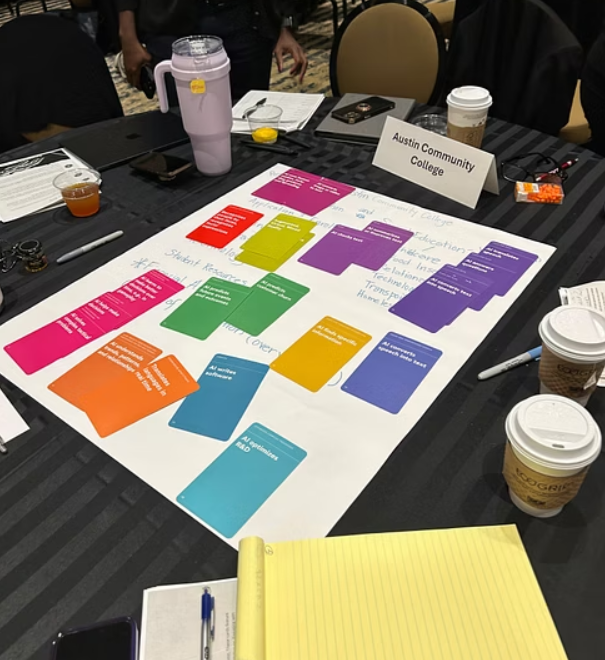

Not because of technology — but because the organization isn't ready to deliver.
Without readiness, innovation becomes fragmented — and impact remains unrealized.
{{ g }}

Our Organizational Readiness & Innovation Impact framework provides a clear, evidence-based view of your organization's true position.
{{ f.desc }}
Levers are the specific organizational conditions and capabilities that leaders can strengthen to improve business performance outcomes.
Strengthening the ability to test assumptions, learn from evidence, and improve through iteration.
Creating an environment where people feel safe to speak up, challenge ideas, and contribute openly.
Strengthening accountability, engagement, and initiative so people contribute with energy and follow-through.
Building the skills and practices that keep customer needs at the center of innovation and decision-making.
Putting in place the systems, processes, and support needed to move ideas into action, and manage rapid change.
Improving collaboration across teams and functions so knowledge flows and work moves faster.
Enabling leaders to visibly and effectively champion innovation and create the conditions for change.
InnoImpact Profile © Treehouse Innovation. Some rights reserved.
We quantify the real business impact of innovation and AI initiatives — not just activity. Moving beyond vanity metrics to the outcomes that define success.
{{ o.desc }}
Early, reliable signals of whether your investments will translate into measurable results.
{{ i.desc }}
Those that can measure, align, and act will define the next generation of market leaders. Those that cannot will continue to invest without knowing why results remain out of reach.